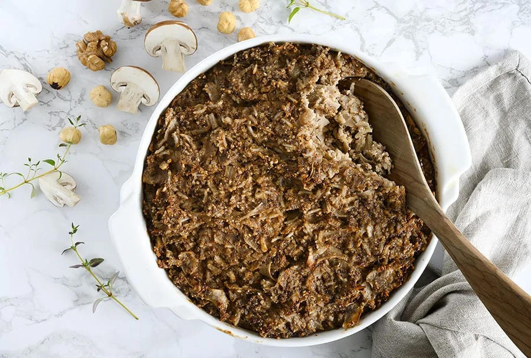

Nøddepostej

Beskrivelse
Den lækre nøddepostej med svampe og jordskokker er virkelig skøn og velsmagende.
Prøv den til en grøn aftensmad i december eller som supplement til julefrokostbordet –
hvis man er vegetar, så er den oplagt at servere som alternativ til and eller flæskesteg,
for den vil ganske sikkert smage skønt med alt det klassiske juletilbehør til.
Den lækre nøddepostej smager virkelig dejligt, både kold og varm, og jeg deler lidt flere tips til den under til opskriften.
ingredienser
- 100 g hasselnødder
- 1 dl basmati ris
- 50 g valnødder
- 350 g champignon
- 1 løg, finthakket
- 2 fed hvidløg, finthakket
- 1 æble, groftrevet
- 200 g jordskokker, finthakket
- 2 æg
- 1 dl piskefløde
- 1 spsk tahin
- 1 tsk timian, tørret
- 1 spsk smør, + lidt til formen
- 1 spsk soja
- sort peber, friskkværnet
- salt, hvis nødvendigt
Skridt
- Rist hasselnøddekernerne på en tør varm pande under omrøring, til hinderne begynder at sprække.
Tag nødderne af varmen og gnid de tørre hinder af hasselnødderne i et rent klæde.
- Kog risene i en gryde med letsaltet vand efter anvisning på emballagen.
- Kom hasselnødder og valnødder i en minihakker og kør, til de er finthakkede.
Sæt dem til side og kom derefter svampene i minihakkeren og kør, til de også er finthakkede eller grofthakkede,
alt efter smag og behag. Sæt dem til side i en skål for sig.
- Varm en pande op med smør og olie og rist svampene ved høj varme under omrøring i nogle minutter.
Skru ned for varmen og tilsæt løg, hvidløg, hasselnødder og valnødder.
Sauter i et par minutter under omrøring, til løgene er blevet bløde.
- Kom svampe, nødder og løg fra panden i en stor skål og tilsæt kogte ris, jordskokker, æg,
piskefløde, æble, tahin, timian, soja, samt lidt salt og friskrevet peber.
- Rør det godt sammen og kom det i et smurt ovnfast fad eller små ramakiner.
- Sæt nøddepostejen i en forvarmet ovn ved 175 grader varmluft og bag den i 30-40 minutter
(20-30 minutter, hvis små ramakiner)